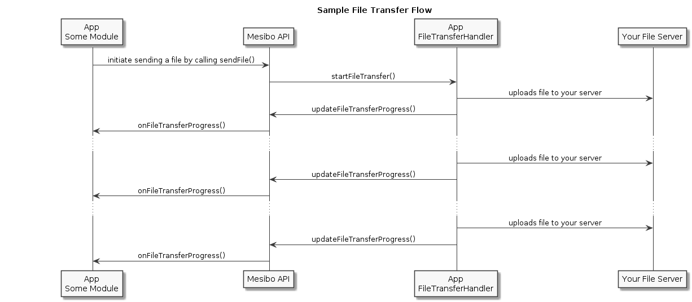

Mesibo Real-time APIs
Estimated reading time: 8 minutesMesibo real-time API allows users to communicate in real-time by providing APIs for
- 1-to-1 messaging
- group messaging
- voice and video calls.
In this section, we will explore these real-time APIs in detail. In addition to these real-time APIs, mesibo provides various other utility APIs for example, listen to network events etc
Key Components
There are three key components of Mesibo real-time APIs
- Functions, which you can invoke. For example, to send a message, make a call etc
- Listeners, which mesibo will invoke for various events. For example, when you receive a message, receive an incoming call etc. You can listen to these listners to get real-time notifications of events.
- Data Stuctures, various data structures used in functions and listeners
API Signatures
All the APIs have exactly the same name and parameters across the platform, unless specified. They only differ in the way they have been called in Java (Android), Objective-C (iOS) and Swit (iOS). For example,
On Android
mesibo.setPath(path)
On IOS
Objective-C
[mesiboInstance setPath:path];
Swift
mesibo.getInstance().setPath(path)
This makes it easy for you to write cross-platform code across platform. In following sections, we will only describe APIs with name and parameters.
Initialization
You need to call one or more initialization API before using any other mesibo APIs.
| Method | Description | Parameters |
|---|---|---|
| init | [Android Only] This is the first API function you must call before you use any other mesibo API. | Application Context |
| setAccessToken | Set access token for the user. | Access Token |
| setPath(Optional) | Path where all the databases and files will be stored. Default Path will be used if this API is not called. | Path |
| setDatabase(Optional) | Enable local database to store messages, and other information.If setDatabase is called before setAccessToken(), same database will be used for all the users. It is recommended to call it after setAccessToken() API. | Name or complete path of the database. If path is not specified, the database will be stored in the default path or the path set by setPath API. |
| addListener | Add a listener | listener |
| removeListener(Optional) | Remove a listener | listener |
| Reset(Optional) | Reset mesibo object | Void |
| setSecureConnection | Enable encrypted connection. | Enable |
| start | Start mesibo connection establishment. mesibo will not establish network connection till the start() is called. However, once the start() is called, mesibo will automatically manage any future reconnections till stop() is called. | Void |
| stop | Disconnect any existing connection and also prevent future reconnections. | Void |
Messaging
Sending messages using mesibo API only requires initializing MesssageParams object and invoke one of the messaging API with it, message id and message itself.
Message ID is 32-bit unique id. It will be converted into a 64-bit globally unique id by the system. The id which you have originally passed will be preserved in the lower 32-bit of the globally unique id. For example, if you send a message with id 0x12345678, it will be converted into global id 0xXXXXXXXX12345678 while sending message to the receiver.
| API Function | Description | Parameters |
|---|---|---|
| sendMessage | Send a message. There are overloaded functions to send message in different formats, for example, string, byte array etc. | 1. Params 2. Message ID 3. Message |
| sendFile | Send a message with file & location | 1. MessageParams 2. Message ID 3. FileInfo |
| sendLocation | Send a location | 1. MessageParams 2. Message ID 3. Location |
| forwardMessage | Forward a message. | 1. MessageParams 2. Message ID 3. ID of message to be forwared |
| resend | Resend a failed message | 1. MessageParams 2. Message ID of failed message |
| cancel | Cancel a messageMessage can not be canceled if already sent & delivered | 1. MessageParams 2. Message ID |
| newMessageID | Returns a new unique message ID | void |
Message Management
These set of APIs deal with managing stored messages in the database and sending read receipts.
To read stored messages from the database, you need to tell mesibo about a set of messages you need to read; for example, all messages, OR messages from a sender, OR for a particular group, OR messages matching a search query etc. This can be achieved by setting a read session. Once you set a read session, you can start reading messages by calling read() api.
You can enable automatic sending of read receipts every time you read a message. This can be achieved by setting a read session with READ_RECEIPT flag. On reading or receiving a message, read receipts will be be automatically send if
-
- Sending Read Receipt is enabled while setting reading session, AND
- Read receipt requested by the sender, AND
- A new real-time or database message matches the read session.
Any messages read will have the status READ instead of NEW.
| API Function | Description | Parameters |
|---|---|---|
| setReadingSession | Set a reading session | - MessageParams - Flag |
| endReadingSession | End reading session.Automatic read receipt will not be send. | void |
| read | Read messages. All subsequent read() will read next messages. | Number of messages to be read |
| deleteMessage | Delete a message | Message ID |
| deleteMessages | Delete messages matching criteria | MessageParams |
| sendReadReceipt | Manually send a read receipt | 1. MessageParams 2. Message ID |
| isReading | Check if a reading session is set | MessageParams |
File Transfer
Sending files is no different than sending plain messages. All you need to do is to first upload the file to a server and then send the URL and thumbnail [optional] using mesibo in real-time. The receiver then downloads it using that URL.
mesibo provides you set of APIs to abstract out the entire process and also let you choose how and where to store your files; for example, Amazon Cloud, Google Cloud, Microsoft Azure, Akamai or your own servers.
To start a file transfer (download or upload), you must initialize a FileInfo object and pass it to sendFile() or startFileTransfer() API. However, instead of creating this object manually, mesibo provides getFileInstance() API, which checks if an existing file transfer for this particular URL (download) or the file (upload) is in progress and if so, returns that object instead of creating a new object. This highly optimizes sending a file by avoid sending duplicate files.

| API Function | Description | Parameters |
|---|---|---|
| getFileInstance | Create a new FileInfo instance for file transfer | 1. Type2. Download URL3. FilePath |
| startFileTransfer | Start a File Transfer | FileInfo object |
| stopFileTransfer | Stop a File Transfer | FileInfo object |
| updateFileTransferProgress | Update the progress of current file Transfer. This API should be called by the FileTransferHandler to update the progress of the file transfer or any error. In turn, it invokes FileTransferProgressListener so that application can update the state, UI etc. | FileInfo object |
| isFileTransferEnabled | Returns true if FileTransferHandler is implemented by the application | void |
User Profile Management [Optional]
You can create and associate a social profile for every known peers or groups. mesibo will set profile fields in MessageParams every time you receive a message from those peers.
| API Function | Description | Parameters |
|---|---|---|
| setProfile | Set a user or group profile | UserProfile Object |
| getProfile | Get a user or group profile | Peer AddressGroup id (for group profile) |
| createUserProfile | Create a user profile | Peer AddressGroup id (for group profile) |
| deleteUserProfile | Delete a user profile | Peer AddressGroup id (for group profile) |
| setSelfProfile | Set self profile | UserProfile Object |
| getSelfProfile | returns self profile | void |
| getUserProfilePicturePath | Get absolute path of user profile picture | UserProfile Object |
| startUserProfilePictureTransfer | Start user profile picture transfer, handled by FileTransferHandler | UserProfile Object |
| deleteUserProfilePicture | Delete user profile picture | UserProfile Object |
| getProfiles | Get all the profiles | void |
| getSortedUserProfiles | Get sorted profiles | void |
| getRecentProfiles | Get recent profiles | void |
Networking, Timings and other Utility APIs
| API Function | Description | Parameters | ||||
|---|---|---|---|---|---|---|
| getNetworkConnectivity | Returns current network connectivity. It can be one of the following. - CONNECTIVITY_UNKNOWN - CONNECTIVITY_DISCONNECTED - CONNECTIVITY_WIFI - CONNECTIVITY_2G - CONNECTIVITY_3G - CONNECTIVITY_4G | void | ||||
| getTimestamp | Get current timestamp (in ms) | void | getUpTime | Get UP time | void | |
| getConnectedTime | Get last connected timestamp | void | ||||
| random | Returns 32-bit pseudo-random number | void | ||||
| isUiThread | Check if current thread is an UI thread. | void | ||||
| loadImage | Load image from the file path | File Path | ||||
| getThumbnailBitmap | Get thumbnail from an image | Bitmap object |
Filesystem APIs
| API Function | Description | Parameters |
|---|---|---|
| createFile | Create a file | Filename and path |
| fileExists | Check if a file exists | Filename and path |
| renameFile | Rename a file | - Old path - New Path |
| copyFile | Copy a file | - src path - dest Path |
| deleteFile | Delete a file | Filename and path |